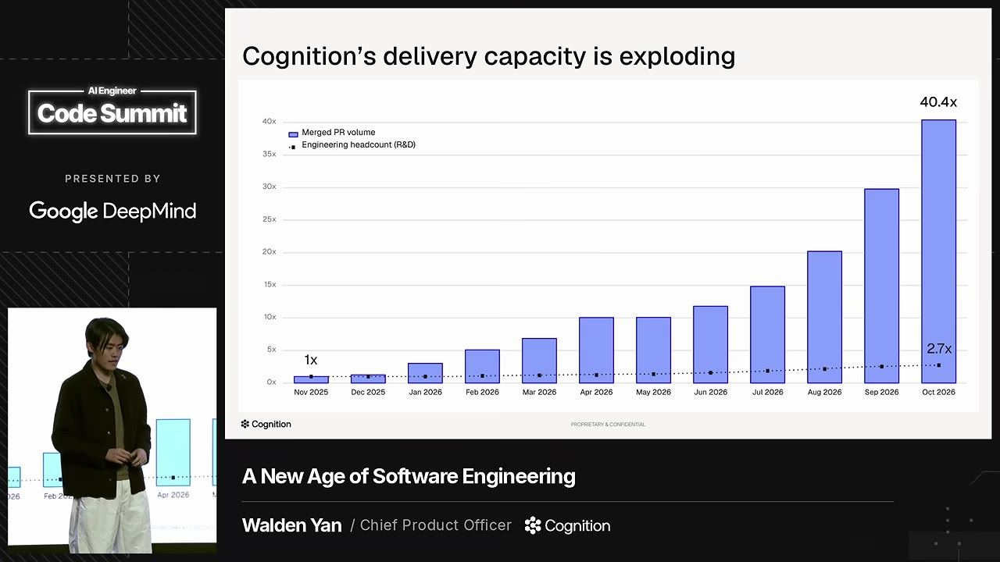
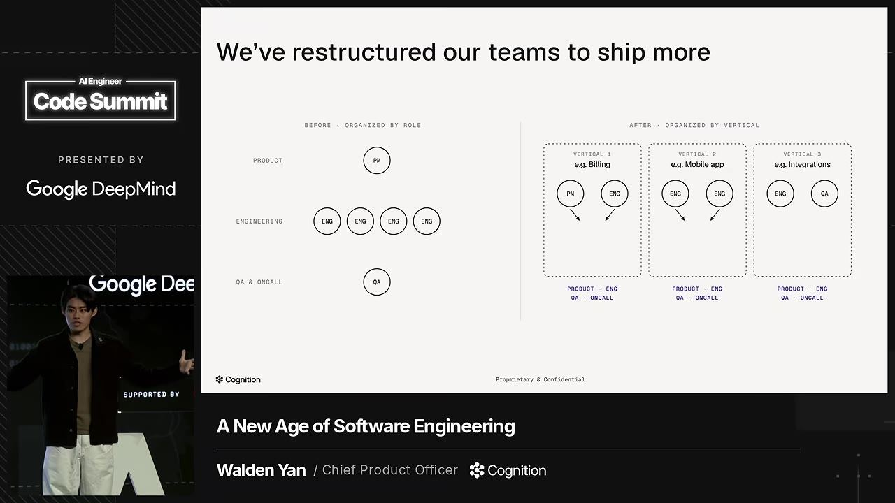
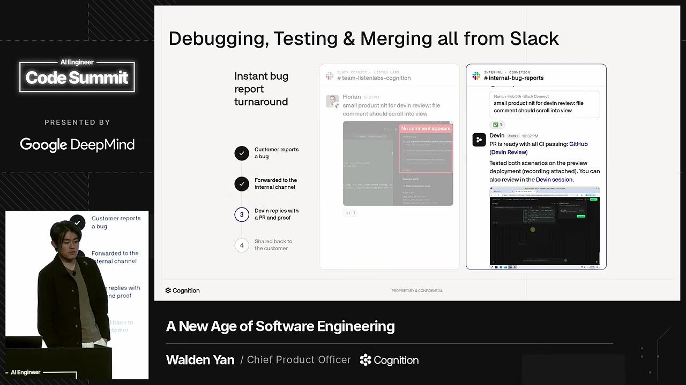
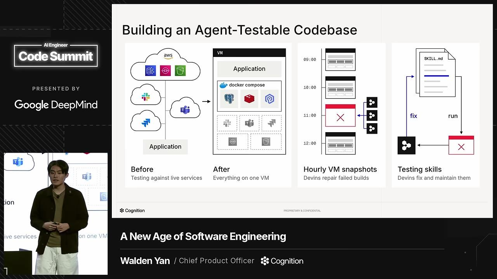
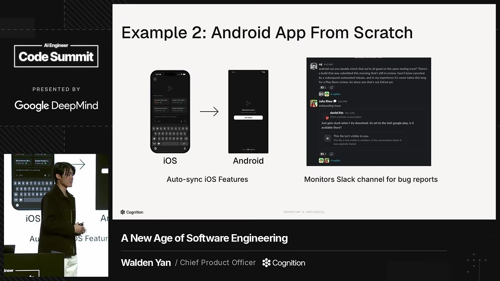

essencial do dia: Mostra o que mudar no time e na base de código para que o agente teste o próprio trabalho sem tocar em serviços reais.
Como a Cognition multiplicou por 40 os PRs com agentes
40x More Merged PRs With 2.7x the Engineers
A vazão da engenharia sobe quando o time vira dono de metas medidas e a base de código roda localmente para o agente testar sozinho.
Depois deste talk você consegue desenhar um plano para dar a um agente uma meta mensurável em vez de uma lista de tarefas
Em 3 frases
A Cognition diz ter multiplicado por 40 os PRs mergeados em um ano, com um time de engenharia 2,7 vezes maior, ao tornar o desenvolvimento autônomo por padrão e delegar o ciclo completo ao Devin.
Para chegar lá, o time quebrou equipes em pods pequenos com responsabilidade vertical, passou a trabalhar pelo Slack e fez todo serviço rodar localmente em VMs reconstruídas a cada hora, para o agente testar sem tocar em sistemas reais.
O próximo passo, segundo o palestrante, é dar jobs em vez de tarefas: uma meta mensurável que o agente persegue por dias, como ajustar inferência em GPUs novas ou manter um app Android em paridade com o iOS durante 44 dias.
Antes de ler
- Software factory fábrica de software analogia no glossário
- Pull request pedido de integração de código analogia no glossário
- Cloud agent agente na nuvem, que roda em ambiente remoto e dispara sozinho analogia no glossário
- Docker empacotamento de app em contêiner
- Skill habilidade, julgamento institucional escrito para o agente executar analogia no glossário
- Recursive self-improvement autoaperfeiçoamento recursivo analogia no glossário
40x em PRs com 2,7x em engenheiros
O gráfico mostra PRs mergeados por mês na Cognition ao longo de 12 meses, com a linha de contratação quase rasa ao lado. O palestrante afirma que cada engenheiro ficou mais de 10 vezes mais produtivo e que a qualidade dos PRs não caiu.


(ampliar imagem)Pods pequenos com dono de ponta a ponta
Equipes grandes viraram pods de duas ou três pessoas com enxames de agentes. Cada engenheiro ouve bugs de clientes, faz QA, atua como PM e mantém o próprio quadro de tarefas, que despacha para o agente. Quem só pegava tickets e repassava ao agente perde espaço.


(ampliar imagem)Trabalho todo pelo Slack, com prova em vídeo
Um cliente envia vídeo de um bug. O time encaminha ao canal interno e marca o Devin, que devolve o PR e outro vídeo mostrando a correção funcionando. O ciclo roda sem abrir IDE nem GitHub na maior parte do tempo.


(ampliar imagem)Mais 2 ideias deste talk
Tudo roda local para o agente testar
Todo serviço foi migrado para Docker Compose, e cada terceiro ganhou uma versão mock. O conjunto roda numa VM única, reconstruída a cada hora com o código mais recente. O Devin conserta builds quebrados e escreve as próprias skills de teste. Assim os agentes não tocam em serviços reais.


(ampliar imagem)Jobs em vez de tarefas
Em vez de listar passos, o engenheiro pede uma meta como reduzir a latência P99. O agente instrumenta, cria alertas no Datadog, quebra o trabalho e manda relatórios. No caso do Android, 44 dias de trabalho guiado pelo app iOS resultaram em um app funcional.


(ampliar imagem)O palestrante é cofundador de uma empresa que vende o Devin, então o talk também funciona como pitch. Os 40x contam PRs mergeados, uma medida de volume que não diz nada sobre valor entregue, tamanho dos PRs ou retrabalho. A afirmação de qualidade igual ou melhor não vem com dado. Os exemplos (GPUs Vera Rubin, app Android) são casos escolhidos e ainda sem lançamento. O time é pequeno e o acesso a hardware novo é raro, o que limita a comparação com a maioria das equipes.
Teste você mesmo
Responda de cabeça antes de abrir. Lembrar com esforço é o que fixa.
- lembrar Por que a Cognition reconstrói as VMs de desenvolvimento a cada hora?
Ver resposta
Para que cada agente comece numa máquina nova, com a versão mais recente do código. Se o build falha, o Devin é o primeiro a consertar o snapshot.
- aplicar Como você transformaria uma tarefa como 'corrigir a página lenta' em um job para um agente no seu projeto?
Ver resposta
Defina uma meta mensurável, como reduzir o P99 de um endpoint para um valor-alvo. Peça ao agente para instrumentar a medição, criar alertas, listar as tarefas e enviar relatórios periódicos. Só então ele corrige.
- criticar Por que o número de 40x PRs mergeados é insuficiente para provar que o time ficou 40x mais produtivo?
Ver resposta
PRs medem volume, não valor, tamanho ou retrabalho. A qualidade igual ou superior é afirmada sem dado, e quem apresenta vende o produto que gera os PRs.
Dê uma meta mensurável a um agente de código
Você precisa de: Claude Code ou outro agente de código e um repositório seu com testes ou um script de benchmark.
- Escolha uma métrica do repositório que dê para medir por script, como tempo dos testes ou tamanho do bundle, e anote o valor atual.
- Escreva um arquivo META.md com a métrica, o comando que a mede, o valor-alvo e o que o agente não pode alterar.
- Peça ao agente para ler o META.md, propor um plano e então rodar ciclos de mudança e medição, registrando cada tentativa.
- Revise o diff final e rode a suíte de testes completa antes de aceitar qualquer mudança.
Deu certo se: A métrica melhora em relação ao valor inicial, os testes seguem verdes e o registro mostra quais tentativas funcionaram e quais não.
O que fazer com isso
- Liste os serviços externos que seu projeto exige para testar e crie um mock ou container local para o mais usado.
- Escolha uma métrica que você acompanha hoje (latência, tempo de CI, taxa de erro) e escreva-a como meta com número-alvo e prazo, em um arquivo que um agente possa ler.
- Peça a um agente de código que reconstrua seu ambiente do zero com um único comando e anote tudo o que falhar.
- Meça por duas semanas quantos PRs mergeados por pessoa você tem e cruze com revert e bugs, para não otimizar só volume.
Conversa com outros talks
- aprofunda 2026 em LLMs: três pontos de virada segundo Simon Willison · Simon Willison defendeu dar ao agente uma meta verificável; a Cognition mostra essa ideia aplicada por dias, de GPUs novas a um app Android.
- complementa Fábrica de software com agentes que se melhora sozinha · Os dois descrevem fábricas de software; a Cognition acrescenta a reestruturação em pods e o ambiente local reconstruído a cada hora.
- Mudança de uma linha que quebra várias partes do sistema · 29 out · em comum: Pull request, Skill, Software factory
- Como gerenciar 20 agentes de código e contratar com eles · 9 nov · em comum: Cloud agent, Pull request
- Como 21 pessoas operam uma empresa de agentes de US$ 100M · 25 nov · em comum: Cloud agent, Pull request